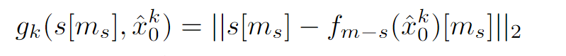
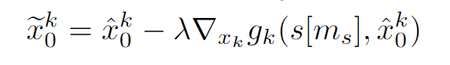
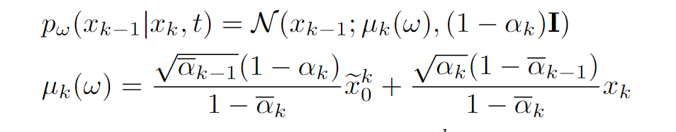
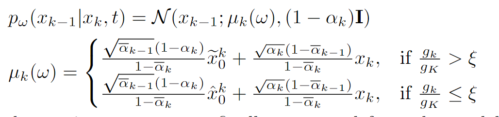

GPT-Connect: Interaction between Text-Driven Human Motion Generator and 3D Scenes in a Training-free Manner¶
Abstract¶
近来，虽然文本驱动的人体动作生成技术再次受到广泛关注，但大多数现有的文本驱动动作生成器通常只设计用于生成空白背景下的动作序列。尽管如此，在实践中，人类天生就是在三维场景中而不是在空白背景中执行动作的。考虑到这一点，我们在这里的目标是进行场景感知文本驱动运动生成。然而，直观地以监督方式训练一个单独的场景感知运动生成器可能需要在大规模的不同 3D 场景中收集和注释大量的运动样本，非常麻烦。为了相对方便地处理这项任务，我们在本文中提出了一种新颖的 GPT-connect 框架。在 GPT-connect 中，我们利用 ChatGPT 以完全免费训练的方式将现有的运动生成器与三维场景连接起来，从而利用现有的空白背景人体运动生成器直接生成场景感知运动序列。大量实验证明了我们提出的框架的有效性和可推广性。
Introduction¶
文本驱动的人体动作生成旨在根据给定的文本提示生成人体动作序列。它与游戏开发、电影制作和虚拟现实体验等各种应用息息相关，并受到了大量研究的关注 [32,35,42,43]。在现有的运动生成方法中，大多数方法 [32, 42, 43] 都侧重于在空白背景中生成人体运动序列。虽然这一点很重要，但在现实生活中，人类总是与不同的三维场景发生互动，而不是只在空白背景中做动作。考虑到这一点，另一个重要且值得探索的研究问题可能是：如何根据给定的文本提示生成人类动作序列，同时还能与给定的三维场景进行适当的交互。为了解决这个问题，先前的研究[35]探索了一种潜在的解决方案，即通过监督训练机制来训练特定场景感知文本驱动运动生成器。具体来说，在 [35] 中，首先给定一个包含不同三维场景中真实运动序列的训练数据集，然后设计运动生成器的架构，使其在生成运动序列的过程中能够同时以三维场景和文本提示为条件。然后，对所设计的生成器进行优化，以最小化在训练数据集上生成的运动序列与地面实况运动序列之间的差异。
图 1：我们的 GPT-Connect 框架在不同的三维场景中，根据不同的文本提示，以完全无需训练的方式生成的场景感知运动序列示意图。随着时间的推移，运动序列中的人体网格逐渐由浅色变为深色。
在本文中，我们认为这种监督训练机制在处理这种场景感知文本驱动的运动生成任务时可能是次优的。这是因为，基于这种机制，要优化高质量、可泛化的生成器，一般要求训练数据集既要大规模，又要有足够的多样性。然而，特别是对于这种场景感知任务，收集和注释这样的数据集可能会非常麻烦。这是因为，要做到既大规模又有足够的多样性，这样的数据集不仅需要包含大量不同文本提示下的地面真实运动序列，还需要将这些运动序列与大量不同的三维场景进行适当的交互。例如，PROX[10] 仅涉及 12 个室内 3D 场景，而 HUMANISE [35] 也是一个室内数据集，一般只专注于构建 4 个动作的文本提示，包括走、坐、站和躺。这些数据集的样本多样性有限，严重限制了现有基于监督训练的方法 [35] 在任意三维场景中根据不同文本提示生成可信人体动作的适用性和通用性。
有鉴于此，我们在这里想知道，与其依靠监督训练机制来处理这项任务，我们是否能从一个新的角度提出一种方法，以完全免训练的方式来处理这项任务。为此，我们首先注意到，扩散模型的应用已经在空白背景文本驱动的人体动作生成中取得了可喜的成果[32, 43]。考虑到这一点，我们在本文中旨在研究是否能找到一种连接器，通过这种连接器，现成的空白背景运动扩散模型可以自动连接到给定的三维场景，从而无需任何训练即可生成能与给定三维场景正确交互的运动序列。需要注意的是，如果能做到这一点，我们就能以相当便捷的方式处理场景感知文本驱动的人体运动生成任务，既能绕过麻烦的监督训练过程，又能满足收集和注释大规模、多样化数据集的要求，而这对于这项任务来说是特别困难的。
在探索过程中，我们发现现成的 ChatGPT 模型[22]可能有潜力扮演这个连接器的角色。ChatGPT 在经过大量训练语料的预训练后，被发现包含丰富的内隐常识[25]，并因此在许多自然语言处理任务中成功地扮演了各种不同的角色[15,24]。然而，尽管 ChatGPT 在各种自然语言处理任务中取得了成功，但如何利用 ChatGPT 作为连接器，将三维场景和现成的运动扩散模型正确地连接起来，仍然不是一件容易的事：(1) 虽然 ChatGPT 的训练语料一般可以包含许多描述不同三维场景的自然句子，但三维场景本身的格式通常对 ChatGPT 并不 "友好"。因此，如何向 ChatGPT 解释一个给定的三维场景，从而有效地利用 ChatGPT 中的隐含知识来理解这个三维场景，以及如何与之交互，这可能是一个难题。(2）此外，即使假定已经配备了某些设计，并且 ChatGPT 已经在某种程度上理解了三维场景，但 ChatGPT 如何成功地将其理解作为指导传递给现成的运动扩散模型也是一个挑战。为了应对这些挑战，使 ChatGPT 成为场景生成器的连接者，我们在本文中提出了一个名为 GPT-Connect 的新框架，它代表了一种全新的方法，首次可以完全免训练的方式完成场景感知文本驱动的运动生成任务。我们在图 1 中展示了我们的框架在不同三维场景中的通用性和灵活性，并在下文中概述了我们的框架。
总的来说，在我们的框架中，要使 ChatGPT 成为三维场景和现成运动扩散模型之间的连接器，我们需要满足以下两个要求。(1）首先，在给定三维场景和文本提示的情况下，我们的框架应确保 ChatGPT 能够理解三维场景，并能相应地输出 "有用信息"，以指导根据文本提示生成的动作序列与场景进行正确的交互。(2）此外，鉴于 ChatGPT 输出的 "有用信息"，我们的框架需要进一步确保运动扩散模型能够正确利用这些信息来指导其运动生成过程。下面，在解释我们的框架是如何满足上述两个要求之前，我们首先介绍上述 "有用信息 "在我们框架中的格式。具体来说，在我们的框架中，我们使用（部分）骨骼序列作为 ChatGPT 传递给运动扩散模型的 "有用信息"。这是因为，首先，骨架序列可被视为包含人类先验的关节坐标的特殊组合（详见第 3.2 节），在适当的设计下，ChatGPT 能够输出（部分）骨架序列。同时，骨架序列作为运动序列的简化版本，可以直观地展示如何与场景进行交互的运动扩散模型。
在定义了我们框架中的 "有用信息 "之后，下面我们将介绍如何通过将我们的框架与以下两个设计（通道）相结合来满足上述两个要求。首先，为了使 ChatGPT 与 3D 场景正确交互，我们在框架中引入了场景-GPT 通道。通过这个通道，给定的三维场景可以首先被解释为 ChatGPT 可以理解的格式。在此基础上（连同给出的文本提示），在适当的设计下，ChatGPT 可以以（部分）骨架序列格式输出 "有用信息"。需要注意的是，输出的 "有用信息 "可以被看作是根据给定的文本提示生成运动序列的合理方式，同时还能与三维场景进行适当的交互。其次，我们进一步将我们的框架与 GPT 生成器通道相结合。在这个通道中，我们利用 ChatGPT 输出的 "有用信息 "来指导运动扩散模型的生成过程，从而生成可信的、场景感知的运动序列。总之，在我们的框架中，有了上述两个通道，我们就能让 ChatGPT 正确执行场景-模型-连接，从而无需任何训练即可处理场景感知文本驱动的人体运动生成任务。
我们的工作贡献概述如下。1) 我们提出了 GPT-Connect，这是一个新颖的框架，通过利用 ChatGPT 作为三维场景和现成的运动扩散模型之间的中间连接器，首次能够以完全免费训练的方式处理场景感知文本驱动的人体运动生成任务。2) 我们在 GPT-Connect 中引入了多项设计，以帮助 ChatGPT 更好地扮演场景生成器和连接器的角色。3) GPT-Connect 不需要任何进一步的培训，就能在评估的基准测试中达到最先进的性能，并能灵活地应用于不同的三维场景。
Related Work¶
文本驱动的人体动作生成。考虑到其广泛的应用，文本驱动的人体动作生成在过去几年里受到了大量研究的关注[2, 4, 5, 8, 9, 12, 14, 16, 18, 23, 27, 30-32, 35-37, 40-44]。在应用扩散模型之前，不同的方法提出了不同的解决方法。其中，T2M [8] 和 TEMOS [23] 提出利用变异自动编码器结构来解决这一问题，而 MotionCLIP [31] 则提出从 CLIP [26] 的共享文本图像潜空间中寻求帮助。后来，Tevet 等人[32] 提出通过运动扩散模型来处理这一任务，随着时间的推移，扩散模型的应用逐渐被认为是处理这一任务的有效方法。最近，Chen 等人[4]探索在潜空间中处理这项任务，并提出了基于运动潜空间的扩散模型，而其他一些工作则使人类能够将文本之外的其他类型的条件传递给扩散模型，如音频[5]和轨迹[19, 40]。除了在这项任务中利用扩散模型之外，最近有几项研究[14, 44]也提出了通过训练一个大型转换器模型来解决这项任务。 上述研究一般侧重于在空白背景下更精确地生成运动序列，作为上述研究的延伸，最近，Wang 等人[35] 重点研究了如何生成与给定文本提示相对应的运动序列，同时又能与三维场景进行适当的交互。具体来说，他们建议通过监督训练机制来训练特定的运动生成模型，从而解决这种场景感知文本驱动的运动生成任务。除了利用监督训练机制的文献[35]之外，还有文献[17,39]探讨了通过强化学习训练场景感知文本驱动运动生成器。 在这项工作中，我们首次提出了一种框架，可以以完全免训练的方式执行场景感知文本驱动运动生成任务。与上述现有的运动生成方法不同，在我们的框架中，既不需要在三维场景中标注运动样本，也不需要人类为扩散模型提供指导。相反，通过适当的设计，我们的 GPT-Connect 框架可以使现成的空白背景运动扩散模型在 ChatGPT 的帮助下自动连接到三维场景。
大型语言模型。一般来说，大型语言模型都是在大型语料库中预先训练过的，最近，人们发现大型语言模型（如 ChatGPT [22]）包含丰富的常识性知识 [25]。有鉴于此，在不同的任务中，大型语言模型被用来扮演各种不同的角色[15, 20, 24, 25, 28]，如语言翻译角色[15]和问题解答角色[28]。在这项工作中，我们设计了一个新颖的框架，通过适当的设计，让现成的 ChatGPT 模型在三维场景和现成的运动扩散模型之间扮演连接器的角色。
Proposed Method¶
给定三维场景和文本提示，场景感知文本驱动运动生成的目标是根据文本提示和三维场景生成人体运动序列。要完成这项任务，正如之前的工作[35]所示，一种直观的方法是通过监督训练机制来训练特定的场景感知文本驱动运动生成器。然而，要专门优化高质量和可通用的生成器，这种机制通常需要根据不同 3D 场景中的各种文本提示收集和标注大量不同的运动样本，这可能非常困难。考虑到这一点，在这项工作中，我们的目标是绕过在不同三维场景中收集和注释运动样本的艰难要求，转而以完全免费训练的方式更方便地处理这项任务。为了实现这一目标，我们提出了一个新框架 GPT-Connect，其中我们建议利用 ChatGPT 作为三维场景和现成扩散模型之间的中间连接器，引导现成的空白背景运动扩散模型生成能与给定三维场景正确交互的运动序列（即场景感知运动序列）。
我们的框架首先包含一个场景-GPT 通道。在这个通道中，首先引导 ChatGPT 理解三维场景 S3D。其中，s∈ RN×J×3 表示完整的骨架序列，其长度与运动扩散模型生成的运动序列长度相同；N 指 s 的帧数，J 指 s 的每一帧中身体关节的数量。此外，ms ∈ {0, 1}N×J 表示与 s 相对应的二进制激活掩码，其中只有当 ChatGPT 通过 Scene-GPT 通道输出 s 的第 n 帧中第 j 个关节的坐标作为 "有用信息 "的一部分时，ms 的 [n, j] -th 元素才为 1。直观地说，s[ms] 大致意味着根据文本提示 t 生成的运动序列可以与 S3D 正常交互。考虑到这一点，在得出 s[ms] 之后，我们的框架会将 s[ms] 传递到 GPT 生成器通道。通过这个通道，s[ms] 作为 ChatGPT 的预测结果，可能会比较粗糙和不准确，但可以适当地利用它来指导现成的空白背景运动扩散模型，生成场景感知的运动序列。下面，我们首先介绍 GPT 生成器通道，然后介绍场景 GPT 通道。
GPT-Generator Channel¶
在本节中，我们首先简要回顾了（运动）扩散模型。然后介绍我们框架中的 GPT-Generator 通道。
重新审视扩散模型。与非平衡热动力模型[29]类似，扩散模型一般由两部分组成，即向噪声迭代扩散干净样本的正向过程和向干净样本逐渐去噪的反向过程。需要注意的是，在这两个过程中，在推理过程中我们通常只需要执行反向过程。由于扩散模型的有效性，它已被应用于多个视觉领域 [7,11,21]，如图像生成 [11] 和图像编辑 [21]。其中，Tevet 等人[32] 将扩散模型应用于文本驱动运动生成任务，在空白背景中生成运动序列，并提出了目前流行的运动扩散模型。下面，我们将重点重温这一运动扩散模型，由于其有效性，它是我们框架中使用的现成模型。
该频道的全貌。在 GPT-Generator 频道中，除了文本提示 t 和现成的文本驱动运动扩散模型 fM DM 外，我们还得到 s[ms] 作为频道的输入。回想一下，s[ms] 源自 SceneGPT 通道，它大致意味着根据 t 生成的运动序列与 S3D 正常交互的方式。考虑到这些输入，除了以 t 为基础的反向过程外，在这个通道中，我们的目标是将运动扩散模型的反向过程附加到 s[ms] 上。这样，我们就能引导反向扩散过程最终生成的运动序列 x0 与三维场景 S3D 正常交互。
为了实现上述目标，对于反向扩散过程作为一个从 xK 逐步去噪到 x0 的步进过程，在每一步 k 从 xk 去噪到 xk-1，一个简单的方法可以是直接将当前步进的输出 xk-1 对齐到 s[ms]。这样，通过步与步间的对齐，理想情况下，我们希望最后一步（即 k = 1 时）的输出 x0 能很好地贴合 s[ms]。然而，实际上，这种天真的方法可能会出现以下两个问题，从而导致次优的结果：(1) 在反向扩散过程中，每一步 k 的输出 xk-1 都属于一个独特的分布 Xk-1，其噪声水平与其他步骤不同。因此，除非在最后一步 k = 1 时，否则 Xk-1̸ = X0。然而，与此同时，s[ms] 可被视为部分 "干净 "的骨架序列。换句话说，虽然 s[ms] 的分布可以被视为接近 X0，但并不是说 s[ms] 也必须接近其他 Xk-1̸ = X0。考虑到上述情况，除非在最后一步（即 k = 1 且 xk-1∈ Xk-1 = X0），否则直接强行将 xk-1 对准 s[ms]，会使 xk-1 偏离其所需的 Xk-1 分布空间，从而中断运动扩散模型的反向过程。(2) 此外，请注意，s[ms] 是由 ChatGPT 的输出得出的，因此可能包含误差。因此，在反向过程的每一步中都过度地将 xk-1 对齐 s[ms]，会使最终的运动序列 x0 受到 s[ms] 中的不准确性的影响，这也是不可取的。为了解决上述两个问题，在我们的 GPT-Generator 频道中，我们采用了一种新策略，将运动扩散模型的反向过程作为 s[ms] 的条件，与上述在整个反向过程中直接将 xk-1 对准 s[ms] 的天真方式相比，我们做了以下两处修改：
修改 1：将 ˆxk 0 改为对齐 s[ms]。首先，在我们的 GPTGenerator 频道中，在反向过程的第 k 步，我们不是直接将 xk-1 作为当前步骤的输出向 s[ms] 对齐，而是先将ˆxk 0 作为当前步骤的中间值向 s[ms] 对齐，然后从对齐后的ˆxk 0 版本（即 exk 0）推导出 xk-1。回想一下，ˆxk 0 代表了扩散模型对其反向过程中第 k 步最终清洁运动的预测。考虑到这一点，通过在逆向过程的不同步骤中以这种方式进行配准，s[ms]与分布空间 X0 中的元素之间的配准就会一致，逆向扩散过程就不会出现将 xk-1 拉离 Xk-1 的问题。
具体来说，为了实现 s[ms] 和 ˆxk0 之间的对齐，我们首先将它们之间的差距定义为：

其中，fm-s(-) 表示将运动序列投影到相应骨架序列的函数。需要注意的是，在这种运动到骨架的投影之后，fm-s(ˆxk 0 ) 的形状与 s 相同，即 fm-s(ˆxk 0 )∈RN ×J×3。因此，如公式 3 所示，利用 fm-s(-)，我们可以将 s[ms] 与 ˆxk 0 之间的差距直接表述为 s[ms] 与 fm_s(ˆxk 0 )[ms] 之间的 L2 距离。得出 s[ms] 与 ˆxk 0 之间的差距后，在反向过程的步骤 k 中，我们将 ˆxk 0 对齐 s[ms]，并获得 exk 0 作为 ˆxk 0 的对齐版本：

其中，λ 是系数超参数，∇xk gk（s[ms], ˆxk 0 ）是根据 gk（s[ms], ˆxk 0 ）计算出的梯度。xk-1 最后可以从 exk 0 中获得，即

请注意，通过这种方式从 exk 0 导出 xk-1，直观地说，我们可以通过 exk 0 间接地将有用信息 s[ms]作为 xk-1 的条件，同时又不会将 xk-1 拉离 Xk-1。我们还通过经验证明了这种间接对齐设计的有效性（如表 3 所示）。
修改 2：在某些步骤中选择性地停用对齐过程。此外，我们注意到，s[ms] 虽然是一个非常有用的先验知识，有助于与 3D 场景进行正确的交互，但它只是 ChatGPT 的预测，而不是 "地面实况 "的指导。因此，s[ms] 有时难免会有不自然或不准确的地方，特别是考虑到 ChatGPT 本身并不是专业的人类骨骼专家。考虑到这一点，在我们的 GPT-Generator 频道中，为了保证生成的运动序列逼真，在以 s[ms] 为指导的同时，我们不希望用 s[ms] 过度指导运动扩散模型的运动生成过程。相反，在某些反向扩散步骤中，当公式 3 中定义的 s[ms] 与当前扩散步骤之间的差距 gk 已经很小时，我们就会关闭对齐过程，而完全依靠现成的运动扩散模型中丰富的运动相关知识来进行运动生成。具体来说，为了实现这一修改，每次我们使用运动扩散模型生成运动序列时，在从 XK 到 XK-1 的第一个反向步骤去噪时，我们首先存储由公式 3 测得的相应间隙 gK。之后，在接下来的扩散步骤的每一步 k 中，只有当 gk / gK > ξ（其中 ξ 是一个超参数）时，我们才会从 exk 0 开始测量 xk-1，作为 ˆxk 0 的对齐版本，否则，我们会直接从 ˆxk 0 开始测量 xk-1。
进行上述两处修改后，以 t 以外的 s[ms]为条件，我们的 GPT-Generator 信道中运动扩散模型的反向过程最终被表述为

需要注意的是，由模型扩散模型最终生成的运动序列 x0 的长度是固定的 N。 然而，在实际应用中，在不同的三维场景中，根据不同的文本提示，s[ms] 所暗示的场景感知运动序列可能具有不同的长度。考虑到这一点，我们建议不直接使用 x0 作为当前 GPT-Generator 通道的输出，而是使用由 s[ms] 正确引导的 x0 的子序列作为通道的最终输出。具体来说，将二进制掩码 ms 中包含激活的身体关节的第一帧和最后一帧分别记为 nstart 和 nend，得出 x0 后，我们再从 x0 中剪辑出 xc 0，即 xc 0 = x0[nstart : nend]，并将 xc 0 作为该通道的最终输出。这样，借助 s[ms]，我们就能最终利用现成的空白背景运动扩散模型，生成能与三维场景 S3D 正常交互的运动序列。
Scene-GPT Channel¶
在我们框架的场景-GPT 频道中，由于 ChatGPT 无法理解 S3D 本身，作为准备工作，我们首先用 ChatGPT 可以理解的格式解释（描述）S3D。然后，给定文本提示 t 和对 S3D 的可理解描述，我们指示 ChatGPT 输出 "有用信息 "s[ms]，然后将其用于我们框架的 GPT 生成器通道，以指导 3.1 节中讨论的运动扩散模型。
了解 S3D . 在场景-GPT 频道开始时，我们首先要找到一种不仅能描述 S3D，而且能让 ChatGPT 理解的格式。具体来说，我们注意到，虽然可以从不同角度描述 S3D，但影响其与运动序列交互的关键因素是其布局，而不是场景中物体的纹理或外观。考虑到这一点，我们进一步观察到，ChatGPT 在预训练阶段看到了大量描述不同网页布局的编程语言脚本（如 CSS 脚本），而在这些脚本中，网页上不同对象的布局通常被描述为其类型和边界框的集合[6]。受此启发，在本频道中，我们建议将 S3D 到 ChatGPT 也解释为该三维场景中对象类型和边界框的集合。
具体来说，要以这种方式解释 S3D，我们需要执行以下 3 个步骤。(1) 识别。给定 S3D，要绑定其中的每个物体，如果我们没有任何关于 S3D 的先验知识，我们首先需要知道这个场景中可能存在的物体类型。要做到这一点，我们首先要渲染三维场景，并从 M 个不同的相机位置拍摄 M 张照片。然后，我们利用现成的开放世界识别模型 Recognize Anything (RAM) [45]，来识别每张照片中存在的物体列表。最后，从 M 张照片中得出的 M 个物体列表的统一集合被视为 S3D 中可能出现的所有潜在物体（有关该识别步骤的更多详情，请参阅补充资料）。(2) 边框推导。一旦我们从步骤（1）或先验知识中获得了 S3D 中可能存在的物体列表，我们就会将 S3D 和该列表传递给现成的三维开放词汇实例分割器，以推导出 S3D 中每个实例的类型和三维边界框。在我们的框架中，我们使用 OpenIns3D [13] 作为这种现成的分割器。(3) 传递给 ChatGPT。最后，如图 2 所示，在获取了 S3D 中对象的类型和三维边界框之后，我们就可以将 S3D 的布局以 ChatGPT 可以理解的格式解释给 ChatGPT，其中我们最终用一个包含六个值（即 x_min、x_max、y_min、y_max、z_min 和 z_max）的列表来表示场景中每个对象的三维边界框。
图 2：以 ChatGPT 可理解的格式去描述 S3D 的过程示意图。
从 ChatGPT 得出 s[ms]。基于文本提示 t 和 S3D 的描述，我们用 ChatGPT 可以理解的方式描述了 S3D，然后引导 ChatGPT 以部分骨架序列的格式输出 "有用信息 "s[ms]。请注意，ChatGPT 自然有可能成为骨架序列生成器，并正确生成 "有用信息 "s[ms]。这是因为，一方面，ChatGPT 经过了大量语料的预训练，这些语料通常涉及非常丰富的人体骨骼和人体动作描述[3]，因此 ChatGPT 可以包含非常丰富的人体骨骼结构和人体行为的隐含知识[22]；另一方面，对于本质上是身体关节坐标组合和连接的骨骼序列来说，经过海量编程数据[6]预训练的 ChatGPT 在预训练阶段自然会看到大量的数字和坐标。然而，请注意，ChatGPT 通常没有经过专门的骨架序列预训练。因此，直接要求 Chat-GPT 生成能与场景正确交互的骨架序列对它来说仍然是一项非常艰巨的任务。考虑到这一点，为了便于 ChatGPT 理解我们的需求并完成这项艰巨的任务，在我们设计的指导 ChatGPT 生成部分骨架序列的指令中，除了向 ChatGPT 指明任务目标、输入格式和预期输出格式外，我们还涉及了一个逐步引导的机制。
具体来说，我们从现有的工作[38]中得到启发：如果大型语言模型能够首先将某项任务划分为几个更简单的子任务，然后再一步步地处理每个子任务，那么它们就能更好地理解和处理这项任务。考虑到这一点，我们在传给 Chat-GPT 的指令中，也将首先生成 s[ms] 这一艰巨任务划分为几个较简单的子任务，并引导 ChatGPT 逐步处理这些子任务。具体来说，我们发现一种有效的方法是引导 ChatGPT 完成以下四个子任务：（1）"首先，请根据提供的边界框找到文本提示中提到的目标对象。 "；(2) "第二，请推理并规划运动轨迹，包括起点和终点。"；(3) "第三，请推理出人的合理初始方位。"；(4) "第四，请根据文本提示和运动轨迹确定运动中的帧数。经验表明，在上述四个子任务的逐步引导下，ChatGPT 作为一个功能强大的现成模型，能够理解其给定的艰巨任务，并生成与 t 和 S3D 都能很好匹配的 s[ms]。我们还在补充文档中演示了 ChatGPT 输出的 s[ms] 示例，以及我们传递给 ChatGPT 的完整指令。
Overall Inference Process¶
以上我们介绍了 GPT-Connect 框架的两个通道。在此，我们总结了我们框架的整体推理过程。具体来说，在我们的框架中，给定一个三维场景 S3D 和一个文本提示 t，我们首先将它们传递给框架的场景-GPT 通道，以获得 "有用信息 "s[ms]。然后，我们将 s[ms] 和 t 传递给框架的 GPT 生成器通道，从而得到框架的最终输出 xc0。请注意，我们框架的整个推理过程都可以通过脚本自动完成。
Experiments¶
为了评估我们提出的框架的有效性，在本节中，我们首先在 HUMANISE 数据集 [35] 上对我们的方法进行了定量评估。此外，我们还在 HUMANISE 中的室内三维场景和 HUMANISE 以外的其他三维场景（如室外三维场景）上，将我们的框架与现有的基于训练的方法进行了定性比较。
图 3： 我们框架的定性结果。(a-d）为 HUMANISE 中的三维场景，（e-f）为 HUMANISE 外的室外三维场景。人类网格由浅到深的颜色表示时间。更多定性结果见补充资料。
Dataset and Evaluation Metrics¶
HUMANISE [35] 是一个人体运动数据集，包含 643 个不同 3D 场景中的 19.6k 个人体运动序列。在该数据集上，除了对整个测试集进行评估外，Wang 等人[35]还特别在测试集的一个子集上对他们的方法和两个替代基线进行了进一步比较，该子集侧重于描述 "行走 "动作的不同文本提示。按照文献[35]的方法，我们在这里对整个测试集和 "行走 "子集进行评估。
评估指标。为了评估在不同三维场景中生成的文本驱动运动序列的质量，根据文献[35]，我们首先采用了以下三个指标：质量得分、动作得分和身体到目标的距离。其中，为了测量质量得分和动作得分（每个得分的范围为 1-5，越高越好），我们按照文献[35]的方法，对生成的运动序列的整体质量和动作语义准确性进行了人类感知研究。对于身体到目标的距离，计算方法是给定文本提示中定义的核心物体与场景中生成的人体动作序列之间的最短距离（以米为单位）。为了更好地衡量生成的运动序列在三维场景中的物理可信度，除了上述三个指标外，我们还根据文献[33, 34]，增加了两个指标：非碰撞得分和接触得分（每个指标的范围为 0-1，越高越好）。我们还在补充资料中提供了有关上述五个指标的更多细节。
Implementation Details¶
我们在 RTX 3090 GPU 上进行实验。对于 ChatGPT，我们使用 GPT-4。此外，对于运动扩散模型[32]，我们使用了直接从其官方 GitHub 仓库下载的 "humanml-encoder-512 "版本[1]。此外，我们将公式 4 中使用的系数超参数 λ 设为 3，将公式 6 中使用的阈值 ξ 设为 0.2，将在 S3D 上从不同相机姿势拍摄的照片 M 数量设为 16。
Main Results¶
HUMANISE 整个测试集的定量结果。如表 1 所示 如表 1 所示，与现有方法 [35]相比，在完全无需训练的情况下，我们的框架在不同的评估指标上都取得了优异的性能。这表明了我们框架的有效性。
关于 HUMANISE "步行 "子集的定量结果。在表 2 中，按照 [35] 的评估设置，我们还在测试集的 "行走 "子集上进一步比较了我们的框架、PROFIBUS 和 HUMANISE。在表 2 中，按照 [35] 的评估设置，我们还在测试集的 "行走 "子集上进一步比较了我们的框架、[35] 提出的方法和 [35] 提出的两个基线（基线 A 和基线 B）。直观地说，这两条基线与[35]中提出的方法不同之处在于，它们设计的场景感知运动生成器采用了不同的架构（有关这两条基线的更多详情，请参阅附录）。如表 2 所示 如表 2 所示，我们的免训练框架始终优于采用不同运动生成器架构的现有基于训练的方法，进一步证明了我们框架的优越性。
定性结果。除了将我们的框架与现有方法[35]进行定量比较外，我们还在图 3 中展示了我们的框架在 HUMANISE 中的三维场景和 HUMAN-ISE 以外的三维场景（取自 Sketchfab）中的定性结果。如图所示，在不同的三维场景中，根据不同的文本提示，我们的框架可以持续生成可信的运动序列。同时，与 [35] 相比，我们的框架还能与三维场景进行一致的交互。这进一步说明了我们框架的有效性和可推广性。
Ablation Studies¶
GPT-Generator 渠道中引导策略的影响。在我们框架的 GPT-Generator 渠道中，为了使反向扩散过程有效地以 "有用信息 "s[ms] 为条件，我们在反向扩散过程的每一步都直接将 xk-1 对准 s[ms]的天真方式上做了两处修改。为了评估这些修改的效果，我们测试了三种变体。在第一种变体（不包含这两种修改）中，我们按照上述简单的方法，直接以 s[ms] 作为反向扩散过程的条件。在第二种变体（不含修改 1）中，在修改 2 未停用配准的扩散步骤中，我们直接在 xk-1 和 s[ms] 之间进行配准，而不在 xˆ0k 和 s[ms] 之间进行配准。此外，在第三种变体（不含修改 2）中，我们不是在某些步骤中停用配准，而是在反向过程的每一步都执行 xˆ0k 和 s[ms] 之间的配准。如表 3 所示 如表 3 所示，我们的框架优于所有三种变体。这表明我们对 GPT-Generator 通道中的引导策略所做的两种修改都很有效。更多的消融研究，如场景-GPT 通道和超参数实验，请参见补充资料。
Conclusion¶
在本文中，我们提出了一个新颖的场景感知文本驱动运动生成框架 GPT-Connect。在这个框架中，我们从一个新颖的角度出发，利用 ChatGPT 作为三维场景和现成运动扩散模型之间的中间连接器，以完全无需训练的方式生成场景感知运动序列。具体来说，我们在框架中设计了场景-GPT 通道和 GPT-生成器通道，使 ChatGPT 能够很好地扮演场景生成器-连接器的角色。无需任何训练，我们的框架就能很好地适用于不同的室内和室外三维场景，而且性能始终优于之前基于训练的方法。